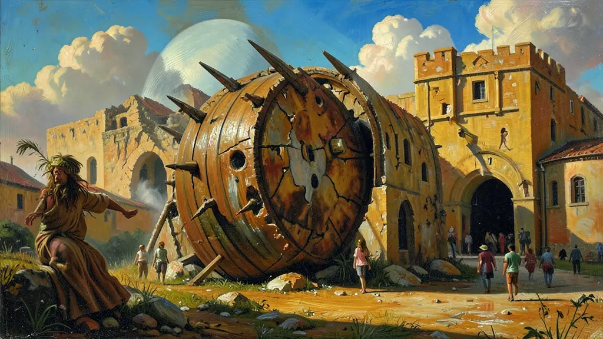
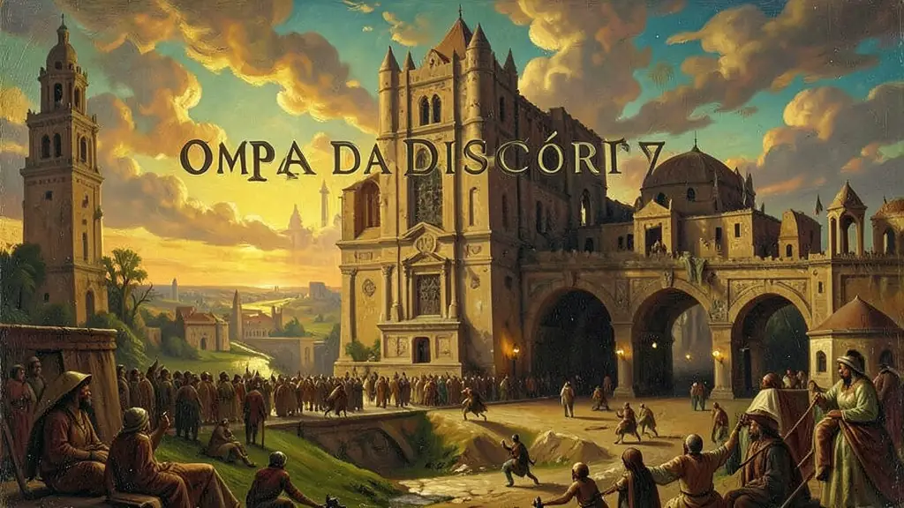
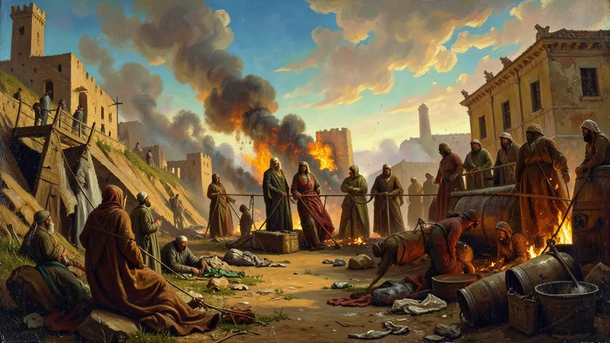

Capítulo 01
1. Sionismo e a Herança da 2ª Guerra
Para os judeus dispersos pelo mundo (Diáspora), o retorno para a 'Terra de Israel' (Eretz Yisrael) era místico e político. Após o extermínio de 6 milhões de judeus pelos nazistas, o mundo sentiu-se moralmente obrigado a garantir um porto seguro para esse povo. A Palestina, sob mandato britânico, era o local escolhido, mas já era habitada há séculos por uma maioria árabe muçulmana e cristã.

Capítulo 02
2. ONU 1947: O Mapa da Discórdia
A ONU propôs dividir a terra: 55% para os judeus e 45% para os árabes. Jerusalém seria uma zona internacional neutra. Os árabes rejeitaram, pois consideravam injusto perderem suas terras ancestrais por uma decisão tomada pela Europa. No dia seguinte à independência de Israel, exércitos do Egito, Jordânia, Síria e Iraque invadiram a região. Israel venceu e expandiu seu território além do planejado pela ONU.

Capítulo 03
3. 1967: Os Seis Dias que Mudaram a Geografia
Sentindo um ataque iminente, Israel destruiu as forças aéreas árabes em poucas horas. Em seis dias, triplicou de tamanho, tomando as Colinas de Golã (Síria), o Sinai (Egito) e o controle total de Jerusalém. Desde então, a fronteira de 1967 é a base de todas as negociações de paz, exigindo que Israel se retire dessas áreas em troca de segurança permanente.

Capítulo 04
4. Choque do Petróleo e Crise Global
Em 1973, países árabes da OPEP (Organização dos Países Exportadores de Petróleo) quadruplicaram o preço do barril para punir os aliados de Israel. Isso causou uma inflação global assustadora e o fim do crescimento econômico acelerado em países como o Brasil, forçando o mundo a buscar energias alternativas e carros mais econômicos.
Capítulo 05
5. Acordos de Oslo e a Falência da Paz
Na década de 90, o líder palestino Yasser Arafat e o premiê israelense Yitzhak Rabin apertaram as mãos. Parecia o fim do conflito, com a promessa de criação de um Estado da Palestina em 5 anos. Mas o extremismo de ambos os lados venceu: Rabin foi assassinado por um judeu radical e os atentados suicidas palestinos aumentaram. Hoje, o muro construído por Israel e o bloqueio a Gaza mantêm a paz como um sonho distante.
A extrema convulsão e fragmentação política da região do Oriente Médio fundamenta-se nos traumas colossais da 'Balcanização' orquestrada pelos imperialistas britânicos e franceses nos Acordos Sykes-Picot (1916). Na partilha das carcaças do moribundo Império Otomano, fronteiras rectilíneas totalmente exógenas e artificiais apartaram milênios de dinâmicas laicais, sectárias-sunitas, xiitas ou étnicas, inserindo artificialmente os governos protetores das jazidas petrolíferas do chamado Novo Grande Jogo geopolítico.
O mais doloroso e nuclear destes distúrbios, como examinado criticamente por Edward Said, é o antagonismo territorial Israelo-Palestino estabelecido atavicamente após o Plano de Partilha pela Organização das Nações Unidas (ONU, 1947). O advento do projeto sionista culminando na instauração do forte Estado-Nacional Judeu em 1948 materializou para os palestinos árabes e o mundo pan-árabe a 'Nakba' (Catástrofe). Uma saga crônica pautada por êxodos geracionais incalculáveis e refúgios que inflamariam as vitórias isrealeses como a famigerada 'Guerra dos Seis Dias'.
Ao Enem, é indispensável relacionar as dinâmicas sociopolíticas do Oriente Médio não como reflexões isoladas e inexplicáveis de 'ódio extremista', mas atados estruturalmente à era do colonialismo ocidental, à política americana da Guerra Fria versus o Nasserismo Pan-Árabe e nas disputas pela matriz carbonífera. Além do embate Arábe-israelense, as divergências geopolíticas na Guerra Irã-Iraque e mais contemporaneamente, as ramificações violentas, ditatoriais e precarizantes para controle hegemônio regional são essenciais ao candidato crítico.
Fonte: SAID, Edward W. A Questão Palestina. São Paulo: Editora da Unesp, 2011.
Atividades interativas
Questões para fixar
A Guerra dos Seis Dias (1967) resultou na ocupação por Israel de territórios estratégicos que são até hoje pontos de disputa. Quais são esses territórios?
Qual foi a principal consequência econômica mundial da Guerra do Yom Kippur, em 1973?
Qual foi o evento que levou a ONU a aprovar o Plano de Partilha da Palestina em 1947?
Qual foi o resultado da Guerra dos Seis Dias em 1967?
Qual foi a consequência econômica da Guerra do Yom Kippur em 1973?